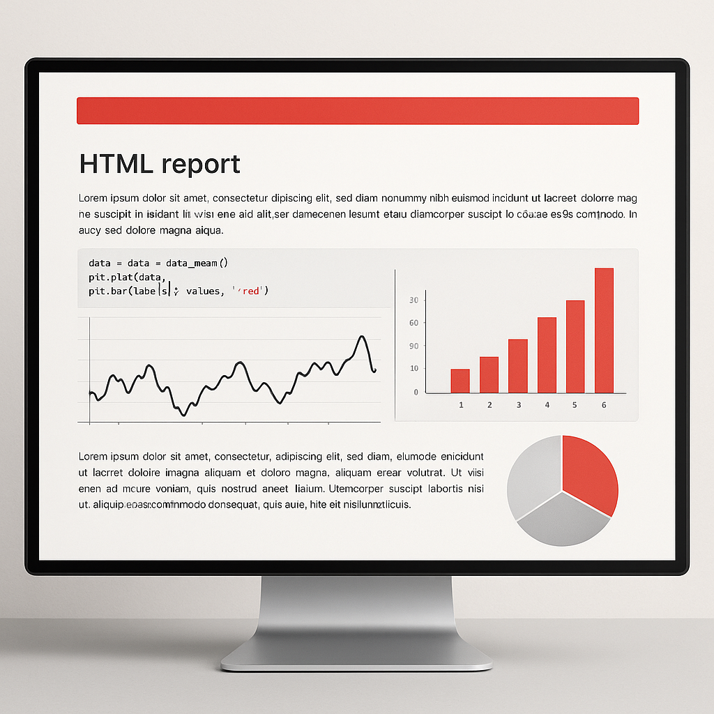

프로젝트 2 — Quarto 기반 원인 분석 보고서Project 2 — Quarto-based Root Cause Analysis Report
OLED deposition 공정 데이터를 읽고 그래프와 통계 분석으로 공정 인사이트를 찾은 뒤 Quarto HTML 보고서로 문서화하는 프로젝트입니다. 상급에서는 .qmd 문서 하나로 코드, 그래프, 통계표, 해석, 결론이 모두 재현되는 보고서를 만듭니다.Read OLED deposition data, discover insights via charts & statistics, then document as a Quarto HTML report. At advanced level, produce a single .qmd document where code, charts, stats tables, interpretation, and conclusions are all reproducible.
P1 → P2 성장: P1이 "CSV 읽기 → 기본 통계 → 차트"였다면, P2 상급은 "CSV 읽기 → 최적 시각화 선택 → 통계 검증 → p-value 기반 원인 분석 → Quarto HTML 보고서"입니다.P1 → P2 Growth: If P1 was "CSV → stats → chart," P2 Advanced is "CSV → optimal visualization → statistical validation → p-value root cause analysis → Quarto HTML report."
oled_deposition_xymap.csv — 4개 panel, 96×64 좌표, 총 24,576행의 확장 OLED deposition 합성 데이터oled_deposition_xymap.csv — Extended synthetic OLED deposition data: 4 panels, 96×64 coords, 24,576 rows
| 컬럼Column | 의미Description | 활용 예Usage |
|---|---|---|
| panel_id, x_index, y_index | panel과 x/y 좌표Panel & x/y coords | x/y map, heatmap |
| chamber, zone | 증착 chamber와 영역Deposition chamber & zone | chamber별 boxplotBoxplot by chamber |
| source_temp_c, substrate_temp_c | 공정 온도Process temperature | 산점도, 회귀분석Scatter, regression |
| pressure_mTorr, oxygen_flow_sccm | 압력/가스 조건Pressure/gas conditions | 상관관계, 회귀분석Correlation, regression |
| thickness_nm, thickness_error_nm | 목표 두께 대비 편차Thickness deviation | boxplot, heatmap, x/y map |
| particle_count, dark_spot_count | 결함 측정값Defect measurements | Pareto, x/y map 원인 연결Pareto, x/y map cause linking |
| defect_type, pass_fail | 결함 유형/판정Defect type/judgment | Pareto chart |
| yield_score | 좌표 단위 품질 점수Quality score per coord | regression, scatter |
CSV를 로드하고 구조를 파악한 뒤, 분석 질문을 설정합니다. 어떤 공정 조건이 yield에 가장 영향을 미치는지, 위치 기반 이상 패턴은 있는지 등을 질문합니다.Load CSV, understand structure, then set analysis questions: which conditions most impact yield, are there position-based anomaly patterns, etc.
statsmodels OLS로 yield_score 회귀분석을 수행합니다. p-value 기반으로 유의한 원인 후보를 정리하고, x/y map hotspot과 defect_type Pareto를 연결하여 원인 가설을 수립합니다.Run OLS regression on yield_score. Identify significant factors via p-value, connect x/y map hotspots with defect_type Pareto to formulate root-cause hypotheses.
oled_deposition_report.qmd에 코드, 그래프, 통계표, 해석, 결론을 모두 담습니다.Put all code, charts, stats tables, interpretations, and conclusions in oled_deposition_report.qmd.
결론 섹션에 "가장 먼저 확인할 공정 조건/장비/위치" 3개 이상을 그래프 근거와 함께 제안합니다.In the conclusion section, suggest 3+ "first-check process conditions/equipment/positions" with chart-based evidence.
GitHub 레포지토리를 만들고 .qmd, HTML, CSV, README.md를 업로드합니다.Create a GitHub repo and upload .qmd, HTML, CSV, and README.md.
| 항목Category | 세부 기준Details | 배점Pts |
|---|---|---|
| 데이터 처리와 재현성Data Processing & Reproducibility | .qmd에서 quarto render로 HTML 재현 가능, 결측치 처리HTML reproducible via quarto render from .qmd, missing values handled | 25 |
| 시각화 완성도Visualization Quality | 6종 이상, x/y map 필수, Pareto 필수6+ types, x/y map required, Pareto required | 25 |
| 통계 분석과 해석Statistical Analysis & Interpretation | 회귀분석, p-value 해석, 원인 가설이 그래프 근거와 연결됨Regression, p-value interpretation, hypotheses linked to chart evidence | 25 |
| 보고서 문서화Report Documentation | Quarto HTML 보고서, 개선 제안 3개+, GitHub READMEQuarto HTML report, 3+ suggestions, GitHub README | 25 |
oled_deposition_report.qmdpivot_table로 x/y 평균값을 만든 뒤 그리세요. panel 하나만 먼저 분석하세요.Create x/y averages with pivot_table first. Start with one panel.
quarto check로 설치 상태를 먼저 확인하세요. Python 경로가 올바른지, 필요한 패키지가 설치되어 있는지 점검합니다.Run quarto check first to verify installation. Check that the Python path is correct and required packages are installed.
결측치와 문자열 컬럼이 모델에 들어갔는지 확인하세요. 독립변수끼리 강한 상관(다중공선성)이 있으면 회귀계수가 불안정합니다. VIF(분산팽창계수)를 확인해 보세요.Check if missing values or string columns entered the model. High correlation between independent variables (multicollinearity) destabilizes coefficients. Check VIF (Variance Inflation Factor).
A. Gemini에게 "p-value를 공정 엔지니어가 이해할 수 있게 해석해줘"라고 요청하세요. 단, AI 답변을 그대로 믿지 말고 그래프와 도메인 상식으로 다시 확인하세요.A. Ask Gemini to "explain p-value so a process engineer can understand." But verify with charts and domain knowledge.
A. 상급 난이도에서는 필요합니다. Quarto를 사용하면 코드-그래프-해석이 하나의 문서에서 재현됩니다.A. Yes, for advanced level. Quarto lets you reproduce code, charts, and analysis in a single document.
A. 공개 저장소에는 절대 올리면 안 됩니다. 회사 데이터, 장비명, lot 정보, 고객 정보는 모두 제외하세요. 제공된 합성 CSV만 사용하세요.A. Never upload to public repos. Exclude all company data, equipment names, lot info, and customer info. Use only the provided synthetic CSV.
필수 제출물:
제출 방식 (필수):
추가 제출 (선택):